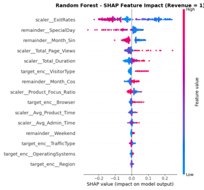
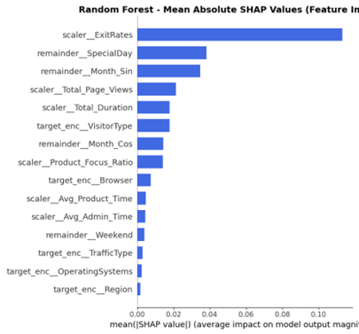
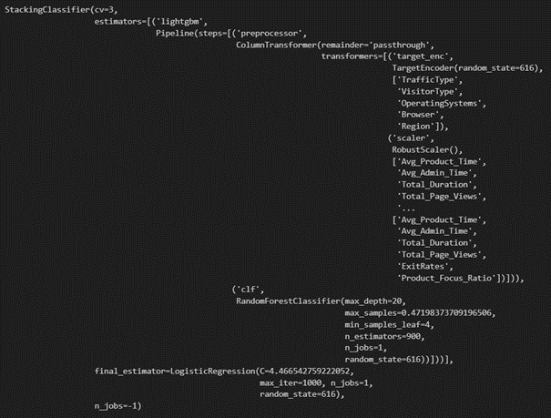
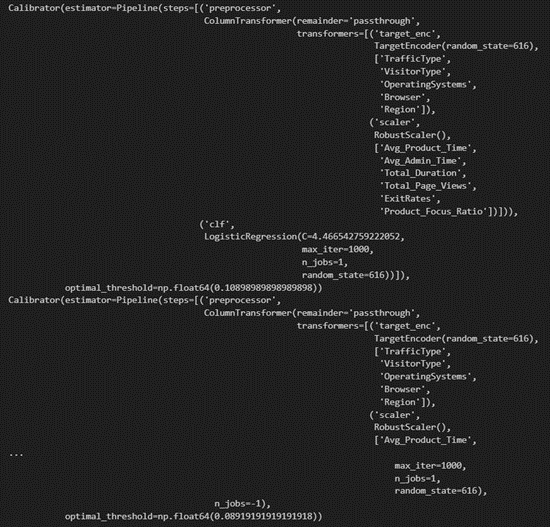
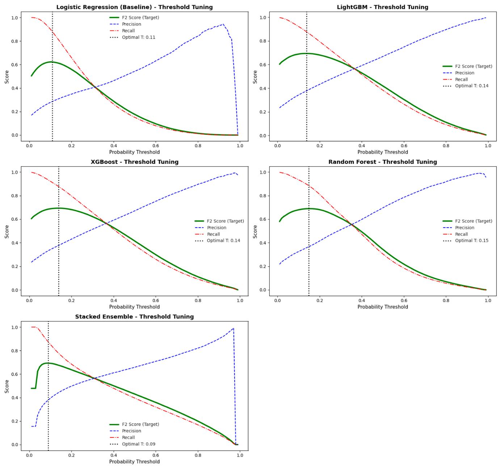

This project builds an end-to-end machine learning pipeline for predicting whether an online shopper is likely to leave without purchasing. In this project, a non-purchase is treated as a lost conversion or churn-risk situation, because the customer leaves the platform without generating revenue.
The main contribution of the project is not only predicting purchase probability, but also measuring uncertainty with conformal prediction. Instead of giving only a raw probability or a hard yes/no decision, the system returns prediction sets that show whether the model is confident or unsure about a customer.
This makes the project useful for marketing decisions. Confident customers can be handled normally, while uncertain customers can be targeted with stronger incentives such as discount coupons before they leave the website.
Link to GitHub Repository and Full Report: Conformal Prediction for Churn Risk ↗
Link to Original Dataset: Online Shoppers Purchasing Dataset on Kaggle ↗
E-commerce platforms collect large amounts of session-level data, but it is difficult to know which visitors are likely to leave without buying. A simple model can estimate purchase probability, but acting only on raw model outputs can be risky because not every prediction is equally reliable.
This project addresses that problem by combining probability-based machine learning with conformal prediction. The goal is to help a marketing team decide whether a customer should receive a discount coupon, especially when the model is uncertain and the customer may still be persuaded.
The dataset contains 1 million simulated online shopping sessions. Each row represents a single visitor session and includes information about page visits, time spent on different page categories, traffic source, visitor type, device/browser information, and whether the session ended with a purchase.
The target variable is Revenue. A value of 1 means the session ended with a purchase. A value of 0 means the customer did not purchase. In business terms, these non-purchase cases are treated as lost conversion opportunities.
The dataset is highly imbalanced. Most sessions do not result in a purchase, which is normal for e-commerce behavior. The class distribution is approximately 84.5% non-purchase and 15.5% purchase.
This imbalance is expected because most visitors browse without buying.
Figure 1. Class distribution.
Feature engineering is used to create stronger behavioral signals from the raw columns. For example:
The month variable is transformed into cyclical features so that the model understands seasonality. This is useful because January and December are close to each other in a calendar cycle, even though their raw numeric values are far apart.
Figure 2. Cyclical month transformation.
After creating the new behavioral features, I apply the main preprocessing steps inside a scikit-learn pipeline. This is important because the transformations must be learned only from the training data. The same learned transformations are then applied to the calibration and test sets, which prevents data leakage.
High-cardinality categorical variables such as TrafficType, VisitorType, Browser, OperatingSystems, and Region are transformed with TargetEncoder. Instead of creating many one-hot columns, each category is represented by its average purchase tendency learned only from the training data.
Continuous numerical features are scaled with RobustScaler. This is useful because session duration and page-view variables may contain extreme values. RobustScaler uses the median and interquartile range, making it less sensitive to outliers.
Target encoding and scaling are placed inside the model pipeline. During cross-validation, each fold learns its own preprocessing statistics only from the training fold, not from validation, calibration, or test data.
The RobustScaler transformation can be summarized as follows:
In simple terms, this means each numerical value is centered around the median and scaled by the middle spread of the data. This is more stable than standard scaling when some users spend unusually long or unusually short time on the website.
After feature engineering, SHAP is used to inspect which variables influence the model most strongly. The plots below show both the direction of the feature effects and the average importance of each feature.

Figure 3. SHAP beeswarm plot showing the direction and size of each feature's impact.

Figure 4. Mean absolute SHAP values showing global feature importance.
ExitRates is the strongest feature in the model. Low ExitRates are strongly associated with higher purchase probability, while high ExitRates usually indicate that the user is close to leaving the website. Total page views, total duration, seasonality, and visitor type also provide useful signals about customer intent.
The project compares a simple baseline model with more advanced tree-based models. Logistic Regression is used as the baseline because it is fast, cheap to train, and easy to interpret. LightGBM, XGBoost, and Random Forest are used as stronger machine learning models, and a Stacked Ensemble is also tested to combine their predictions.
The stacked model combines the outputs of several models and passes them into a final logistic regression layer. This allows the system to test whether combining different models improves performance over the best individual model.

Figure 5. Stacked ensemble structure used to combine base model predictions.
Hyperparameter tuning is done with Optuna using the TPE sampler. This is more efficient than blind grid search because it learns from previous trials and searches better parameter regions. Successive Halving Pruner is used to stop weak trials early, and early stopping is used for boosting models.
The most important metric during model optimization is the Brier Score. This is because the project depends on trustworthy probabilities. A model that says a customer has an 80% chance of purchasing should be close to correct about 8 out of 10 times. Therefore, probability calibration is more important here than only ranking customers.
Penalizes confident wrong predictions.
Measures probability reliability.
Checks performance across both classes.
Prioritizes recall for marketing use.
Captures most actual buyers.
Shows the cost of high recall.
Figure 6. Final test metrics.
In this project, the base models are LightGBM, XGBoost, and Random Forest. Logistic Regression is used as the final meta-learner because it is simple and less likely to overfit the base model outputs. However, the stacked model does not beat LightGBM by a meaningful margin, probably because the base models are all tree-based and therefore not diverse enough.
After threshold tuning, each model is wrapped inside a calibrated structure. This keeps the prediction pipeline consistent and allows the same logic to be applied across different algorithms.

Figure 7. Calibrated model pipeline structure after threshold tuning.
The threshold plots below show how precision, recall, and F2 Score change as the decision threshold moves. Since the business goal is to catch as many potential buyers as possible, the selected thresholds are lower than the default 0.50 threshold.

Figure 8. Threshold tuning results for Logistic Regression, LightGBM, XGBoost, Random Forest, and Stacked Ensemble.
Python & Data Work: pandas, NumPy, dataframe operations, feature engineering, model evaluation
Big Data & Distributed Computing: PySpark, Spark DataFrames, stratified splitting at scale, pandas UDFs
Machine Learning: LightGBM, XGBoost, Random Forest, Logistic Regression, Stacked Ensemble, binary classification, threshold tuning
Probabilistic ML: Brier Score optimization, probability calibration, conformal prediction, prediction sets, uncertainty-aware decision-making
Model Selection & Tuning: Optuna, TPE sampler, Successive Halving Pruner, early stopping, cross-validation, out-of-fold predictions
Explainability: SHAP feature importance, beeswarm interpretation, global and local model explanation
AWS & Cloud: AWS EMR, Amazon S3, distributed Spark execution, AWS CLI, boto3, cloud-based model artifacts
MLOps: MLflow experiment tracking, model logging, model loading, model artifact management, end-to-end pipeline design
The best-performing model is selected using out-of-fold F2 scores. F2 Score is useful here because the marketing objective values recall more than precision. Missing a potential buyer is more costly than sending a discount to someone who may not buy.
| Model | Out-of-Fold F2 Score |
|---|---|
| Logistic Regression | 0.6220 |
| LightGBM | 0.6936 |
| XGBoost | 0.6933 |
| Random Forest | 0.6895 |
| Stacked Ensemble | 0.6934 |
LightGBM achieves the highest out-of-fold F2 Score with a value of 0.6936. The Stacked Ensemble and XGBoost are very close, but LightGBM is selected as the best model because it gives the strongest result with a simpler final structure.
The most important part of this project is the interpretation of uncertainty. A normal classifier returns a hard prediction such as 0 or 1. Conformal prediction adds another layer by showing whether that hard prediction is actually reliable.
| Revenue | Raw Probability | Tuned Prediction | CP 99 Set | CP 95 Set | CP 90 Set | CP 80 Set |
|---|---|---|---|---|---|---|
| 0 | 0.3616 | 1 | [0, 1] | [0, 1] | [0] | [] |
In this example, the actual result is Revenue = 0, meaning the customer did not purchase. However, the tuned model prediction is 1, so the standard model incorrectly labels this customer as a likely buyer.
The raw probability is only around 36%. This means the model had enough signal to cross the tuned decision threshold, but it was not truly confident. This is exactly where conformal prediction becomes useful.
At the 99% and 95% confidence levels, the conformal prediction set is [0, 1]. This means the model is admitting uncertainty. It cannot confidently say whether the customer will buy or not. A normal model hides this uncertainty, but conformal prediction makes it visible.
From a business perspective, this customer is not a guaranteed buyer. They are a borderline customer. This is the type of customer who may need an incentive, such as a 15% or 20% discount, before leaving the website. Without conformal prediction, the marketing team might wrongly assume that this customer is already likely to buy and may not take action.
The project demonstrates that probability-based machine learning can be combined with conformal prediction to support better marketing decisions. The model does not only say who is likely to purchase. It also tells the team when the prediction is uncertain.
The main recommendation is to use the model in two stages. First, use the tuned binary prediction to identify likely buyers or churn-risk customers. Second, use the conformal prediction sets to decide how confident the system is. Customers with uncertain sets such as [0, 1] should be treated carefully because they may be persuadable.
This creates a more practical marketing strategy. The company can avoid wasting budget on customers who are already likely to buy, while focusing stronger incentives on uncertain customers who may otherwise leave without purchasing.